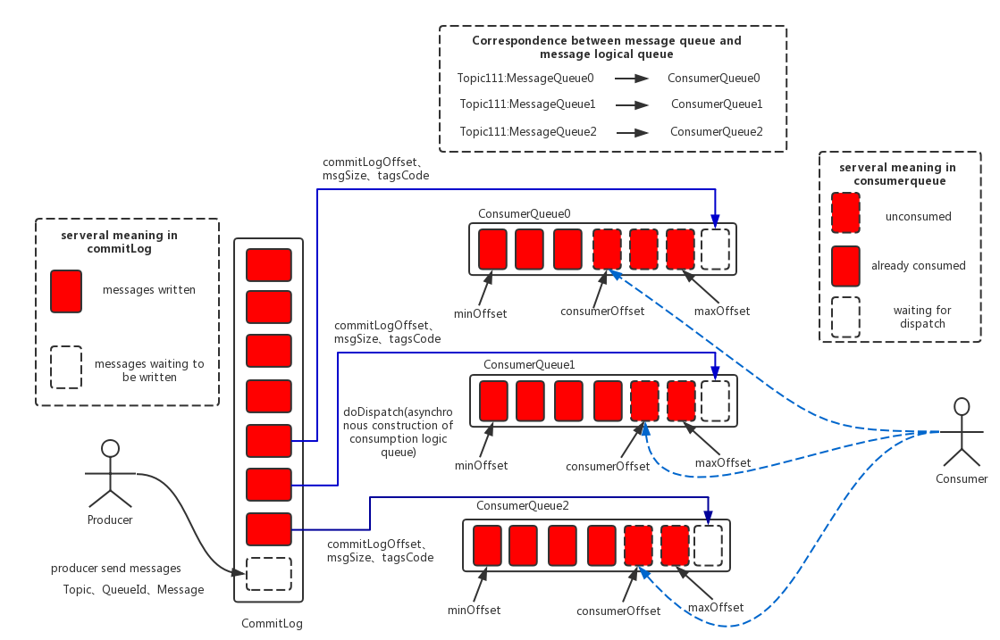
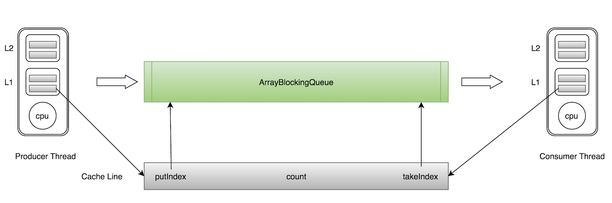

MQ的基础使用与原理
1. MQ 的基本概念
1.1 MQ 的应用场景
MQ的在系统中主要有三方面:
- 异步调用 (注册发短信)
- 系统解耦 (订单减库存)
- 流量削峰 (秒杀)
1.2 一般MQ的基本角色
- 生产者(producer): 负责生产并发送消息。
- 消息代理(broker): 负责接收消息，存储消息，消息转发。
- 消费者(consumer): 负责消费消息。
- 命名服务(nameserver): 负责存储注册信息(元数据信息)，一般是三代MQ才有的组件设计，如kafka的zookeeper以及rocketmq 的nameserver 组件。
1.3 队列的分类
- 优先级队列
优先级队列“破坏”了队列FIFO的数据机构特性，优先级高的消息可以被具备优先消费的特权。(只有生产者速度大于消费者速度的时候，优先级队列才有意义)(VIP客户，普通客户) - 延迟队列
当消息发送后，等待特定的时间后，消费者才能拿到这个消息进行消费。实际中多采用队列的延迟机制，而不是消息的延迟机制。(例如订单完成后1分钟给用户发短信。) - 死信队列
当某些消息不能被正确消费(如1.消息被否定确认。 2.消息在队列的存活时间超过设置的TTL时间。3.消息队列的数量已经超过最大队列长度。)，未确保消息不会被无故丢弃，一般将这一类的信息放置在一个特殊的队列里面重新处理，这一类队列称作: 死信队列。(例如生成订单后如果30分钟内未付款则取消订单。) - 重试队列
重试队列其实可以看成是一种回退队列，重试队列和死信队列一样，都是为消息不能被正确消费此类异常信息提供了保障机制。重试队列一般分成多个重试等级，每个重试等级一般也会设置重新投递延时，重试次数越多投递延时就越大。重试越多次重新投递的时间就越久，为此需要设置一个上限，超过投递次数就入死信队列。
1.4 消费模式
push 模式
机制: broker(消息代理)主动的将消息退给consumer(消费者)。
优点: 消息实时性较高。
缺点: 当消费者消费能力弱的时候(例如消费者处理一条数据流程相对复杂)，那么就会出现慢消费问题，而broker还是不断地给消费者 push 消息，最终可能下游消费者内存撑不住，崩溃异常。pull 模式
机制: consumer(消费者)主动与broker(消息代理)建立连接，拉取消息。
优点: 可以自主控制消费速率，基本不会有下游消费者崩溃的问题，处理大量消息有优势。
缺点: 消息实时性不如push模式，需要设置合适的拉取频率，设置的频率高可能会产生无效的pull请求(无效的RPC开销)，设置的频率低可能会导致消息堆积。
2. 消息队列对比
2.1 各类MQ对比
| 特性 | ActiveMQ | RabbitMQ | RocketMQ | Kafka |
|---|---|---|---|---|
| 所属社区/公司 | Apache | Mozilla Public License | Ali | Apache |
| 成熟度 | 成熟 | 成熟 | 比较成熟 | 成熟 |
| 客户端支持语言 | Java、C、C++、C#、Ruby、Perl、Python、PHP等 | Java，Python、Ruby、.NET、C、PHP等 | Java、C++ Go | Java、.NET、PHP、Ruby、Python、Go等 |
| 实现语言 | Java | Erlang | Java | Scala |
| 协议 | OPENWIRE XMPP AMQP 等 | AMQP | 自定义协议 | 自定义协议 |
| 消息存储 | 内存，磁盘，支持少量堆积 | 内存，磁盘，支持少量堆积 | 磁盘，支持大量堆积 | 内存，磁盘，支持大量堆积 |
| 负载均衡 | 支持 | 支持(但不太友好) | 支持 | 支持 |
| 集群方式 | 支持简单的集群模式(主备) | 只支持简单的集群模式(复制模式) | 支持多Master,多Master-Slave模式 | 天然的Leader-Slave 集群模式 |
| 可用性 | 高，基于主从架构 | 高，基于主从架构 | 非常高，基于分布式架构 | 非常高，基于分布式架构 |
| 时效性 | 毫秒级 | 微秒级，延时最低 | 毫秒级 | 毫秒级以内 |
| 单机吞吐 | 万级，比Kafka和RocketMQ都低一个等级 | 万级，比Kafka和RocketMQ都低一个等级 | 十万级，高吞吐MQ | 十万级，高吞吐MQ |
| TOPIC数量影响吞吐 | - | - | 可以支持上百个topic而不会引起吞吐量急剧下降 | 在topic 从几十个到几百个时，吞吐量会急剧下降。 |
| 消息确认机制 | 支持 | 支持 | 支持 | 支持 |
| 消息回溯 | 不支持 | 不支持 | 支持回溯到对应的时间 | 支持回溯到对应的offset |
| 顺序消息 | 不支持 | 不支持 | 支持 | 支持 |
| push&&pull | 支持push 和 pull | 支持push 和 pull | 支持push 和 pull | 支持pull |
| WEB管理 | 自带Web界面 | 自带漂亮的Web界面 | 有独立的Web管理页面 | Kafka-Manager等 |
| 应用场景 | 主要用于异步，系统解耦的功能上基本不用于大规模数据场景的情况。偶尔有丢失数据的风险。 | erlang语言开发，安全，性能很好，管理界面友好，互联网公司使用案例较多。但较少用于对吞吐量有一定要求的项目上。 | 吞吐量很高，支持大量的topic。但目前来说相对于其他几种消息队列来说并不是很成熟，社区活跃度低，相关技术书籍较少。 | 吞吐量高，在大数据实时计算以及日志收集等场景大规模使用，社区活跃度高，已经成为业界的标准。 |
2.2 RabbitMQ架构
Connetion&Channel :
生产者与消费者通过connection 与broker 连接，connection 实际是实现了AMQP协议的TCP连接，而channel(信道) 是建立在connection 上的虚拟连接。（为什么有了TCP还需要信道，因为在实际应用中，会有多个生产者与消费者同时发送或消费消息，若频繁创建TCP和销毁TCP来达到此需求，则对操作系统的消耗是比较高的，并且TCP连接资源也是有限的，所以采用channel 设计对单一的connection进行复用(类比JAVA NIO 的多路复用)，来节约TCP连接资源与提高并发能力。）
Routing Key
消息发送给交换器时，消息将拥有一个路由键（默认为空），交换器根据这个路由键将消息发送到匹配的队列中。
Exchange
交换机，消息到达代理服务器的第一站，根据分发规则，匹配查询表中的路由键（Fanout Exchange除外），分发消息到队列中去。
目前共四种Exchange。
1.Direct(直连交换机)
消息中的路由键(routing key)如果和binding key 一致， 交换器就将消息发到对应的队列中。
2.Topic（主题交换机）
Topic 与Direct 对比， routing key 支持通配符与 bingding key 进行匹配。例如 usa.# 匹配下图中的usa.news, usa.weather。
“#” : 代表至少匹配一个
“*“： 代表匹配0个或者多个
3.Fanout(广播交换机)
不通过routing key 进行匹配， 将所有消息发送到与exchange 绑定的 queue中。
4.Header(头交换机)
Header 交换机同样忽略 routing key 匹配规则，它使用的是header 绑定的键值对进行x-match-any（默认）或者x-match-all 模式进行匹配(其他方面 direct 匹 配模式没什么两样)，但性能较差，目前已经很少使用。
Binding Key
队列需要通过绑定键（默认为空）绑定到交换器上，交换器将消息的路由键与所绑定队列的绑定键进行匹配，正确匹配的消息将发送到队列中。路由键是偏向生产的概念，而绑定键是偏向消费的概念。
Queue
消息队列，作为 消息的容器，作为消息的终点，等待消费者从队列拿走消息。
2.3 RocketMQ架构

Producer
消息发布的角色，发送模式支持同步发送与异步发送。支持分布式集群部署。
Consumer
消息消费的角色，支持push 以及 pull 模式。支持分布式集群部署。
NameServer
NameServer 的角色有点类似Kafka 的zookeeper。
NameServer 主要提供两个功能:
- Broker 管理: NameServer接受Broker集群的注册信息并且保存下来作为路由信息。然后提供心跳检测机制，检查Broker是否还存活。
- Topic 路由信息管理: 每个NameServer将保存关于Broker集群的整个路由信息和用于客户端查询的队列信息。然后Producer和Conumser通过NameServer就可以知道整个Broker集群的路由信息，从而进行消息的投递和消费
NameServer 通常也是集群部署，但各个实例之间并不通讯。Broker是向每一台NameServer注册自己的路由信息，所以每一个NameServer实例上面都保存一份完整的路由信息。当某个NameServer因某种原因下线了，Broker仍然可以向其它NameServer同步其路由信息，Producer,Consumer仍然可以动态感知Broker的路由的信息。
Broker
主要负责消息的存储、投递和查询以及服务高可用保证。
有以下模块组成:
- Remoting Module：整个Broker的实体，负责处理来自clients端的请求。
- Client Manager：负责管理客户端(Producer/Consumer)和维护Consumer的Topic订阅信息
- Store Service：提供方便简单的API接口处理消息存储到物理硬盘和查询功能。
- HA Service：高可用服务，提供Master Broker 和 Slave Broker之间的数据同步功能。
Index Service：根据特定的Message key对投递到Broker的消息进行索引服务，以提供消息的快速查询。
一个请求的调用链:

- 启动NameServer，NameServer起来后监听端口，等待Broker、Producer、Consumer连上来，相当于一个路由控制中心。
- Broker启动，跟所有的NameServer保持长连接，定时发送心跳包。心跳包中包含当前Broker信息(IP+端口等)以及存储所有Topic信息。注册成功后，NameServer集群中就有Topic跟Broker的映射关系。
- 收发消息前，先创建Topic，创建Topic时需要指定该Topic要存储在哪些Broker上，也可以在发送消息时自动创建Topic。
- Producer发送消息，启动时先跟NameServer集群中的其中一台建立长连接，并从NameServer中获取当前发送的Topic存在哪些Broker上，轮询从队列列表中选择一个队列，然后与队列所在的Broker建立长连接从而向Broker发消息。
- Consumer跟Producer类似，跟其中一台NameServer建立长连接，获取当前订阅Topic存在哪些Broker上，然后直接跟Broker建立连接通道，开始消费消息。
关键设计
2.3.1 消息存储

2.3.2 消息存储文件
commitlog
消息主体以及元数据的存储主体，存储Producer端写入的消息主体内容,消息内容不是定长的。单个文件大小默认1G ，文件名长度为20位，左边补零，剩余为起始偏移量，比如00000000000000000000代表了第一个文件，起始偏移量为0，文件大小为1G=1073741824；当第一个文件写满了，第二个文件为00000000001073741824，起始偏移量为1073741824，以此类推。消息主要是顺序写入日志文件，当文件满了，写入下一个文件。
consumeQueue
消息消费队列，引入的目的主要是提高消息消费的性能，由于RocketMQ是基于主题topic的订阅模式，消息消费是针对主题进行的，如果要遍历commitlog文件中根据topic检索消息是非常低效的。Consumer即可根据ConsumeQueue来查找待消费的消息。其中，ConsumeQueue（逻辑消费队列）作为消费消息的索引，保存了指定Topic下的队列消息在CommitLog中的起始物理偏移量offset，消息大小size和消息Tag的HashCode值。consumequeue文件可以看成是基于topic的commitlog索引文件，故consumequeue文件夹的组织方式如下：topic/queue/file三层组织结构。同样consumequeue文件采取定长设计，每一个条目共20个字节，分别为8字节的commitlog物理偏移量、4字节的消息长度、8字节tag hashcode，单个文件由30W个条目组成，可以像数组一样随机访问每一个条目，每个ConsumeQueue文件大小约5.72M。
indexFile
IndexFile（索引文件）提供了一种可以通过key或时间区间来查询消息的方法。Index文件的存储位置是：\$HOME/store/index${fileName}，文件名fileName是以创建时的时间戳命名的，固定的单个IndexFile文件大小约为400M，一个IndexFile可以保存 2000W个索引，IndexFile的底层存储设计为在文件系统中实现HashMap结构，故rocketmq的索引文件其底层实现为hash索引。
2.3.3 同步刷盘和异步刷盘

(1) 同步刷盘：如上图所示，只有在消息真正持久化至磁盘后RocketMQ的Broker端才会真正返回给Producer端一个成功的ACK响应。同步刷盘对MQ消息可靠性来说是一种不错的保障，但是性能上会有较大影响，一般适用于金融业务应用该模式较多。
(2) 异步刷盘：能够充分利用OS的PageCache的优势，只要消息写入PageCache即可将成功的ACK返回给Producer端。消息刷盘采用后台异步线程提交的方式进行，降低了读写延迟，提高了MQ的性能和吞吐量。
2.3.4 页缓存技术（PageCache）
页缓存（PageCache)是OS对文件的缓存，用于加速对文件的读写。一般来说，程序对文件进行顺序读写的速度几乎接近于内存的读写速度，主要原因就是由于OS使用PageCache机制对读写访问操作进行了性能优化，将一部分的内存用作PageCache。对于数据的写入，RocketMQ会先写入至Cache内，随后通过异步的方式由pdflush内核线程将Cache内的数据刷盘至物理磁盘上。对于数据的读取，如果一次读取文件时出现未命中PageCache的情况(缺页中断)，RocketMQ会从物理磁盘上访问读取文件的(调用mlock 来禁止使用swap 以及 调用madvise 进行文件预热)，同时会顺序对其他相邻块的数据文件进行预读取。
在RocketMQ中，ConsumeQueue文件存储的数据较少，并且是顺序读取，在page cache机制的预读取作用下，Consume Queue文件的读性能几乎接近读内存，即使在有消息堆积情况下也不会影响性能。而对于CommitLog消息存储的日志数据文件来说，读取消息内容时候会产生较多的随机访问读取，但整体还是有序地读，只要那整块区域还在Page Cache的范围内，还是可以充分利用Page Cache。
2.3.5 内存映射
另外，RocketMQ主要通过MappedByteBuffer对文件进行读写操作。其中，利用了NIO中的FileChannel模型将磁盘上的物理文件直接映射到用户态的内存地址中（这种Mmap的方式减少了传统IO将磁盘文件数据在操作系统内核地址空间的缓冲区和用户应用程序地址空间的缓冲区之间来回进行拷贝的性能开销），将对文件的操作转化为直接对内存地址进行操作，从而极大地提高了文件的读写效率（正因为需要使用内存映射机制，故RocketMQ的文件存储都使用定长结构来存储，方便一次将整个文件映射至内存）。
- read + write (一般发送流程)
- mmap + write (rocketmq)
- sendfile (linux 2.1 )

- sendfile(linux 2.4 kafka)
2.3.6 与kafka 的一些对比
- RocketMQ与Kafka 都是顺序写入，RocketMQ 是所有的消息都写入一个文件中(commitlog)，而Kafka 是一个分区(partition)一个文件，这使得Kafka在数据迁移上更加灵活方便，但是如果存在大量的Topic 和 partition 的话，从全局来看顺序读写将会变为随机读写，不能发挥出PageCache 的优势，相反RocketMQ只有一个文件，从全局来看都是顺序读写，不会有此类问题。(附 阿里云中间件团队测试样例 注: 不断增加发送端的压力,直到系统吞吐量不再上升,而响应时间拉长。此时服务端出现性能瓶颈，获取相应的系统最佳吞吐量，整个过程中保证消息没有累积。)
- RocketMQ 采用 mmap + write 方式，并且通过页缓存禁止使用swap 来提高读写效率以及通过预热技术来解决缺页中断而产生的性能问题。而Kafka 使用了sendfile 函数来发送数据，相对于mmap 少了一次缓存拷贝，所以单从写入来讲，Kafka应该较RokectMQ 要快。
3 .Disruptor，一个特殊的MQ
3.1 Disruptor 介绍
disruptor是英国外汇交易公司LMAX开发的一个高性能队列, 研发的初衷是解决内存队列的延迟问题（在性能测试中发现竟然与I/O操作处于同样的数量级）. 基于Disruptor开发的系统单线程能支撑每秒600万订单, 2010年在QCon演讲后, 获得了业界关注. 2011年, 企业应用软件专家Martin Fowler专门撰写长文介绍. 同年 它还获得了Oracle官方的Duke大奖。
3.1.1 简单使用
1 | package com.otsdata.mq.disruptor; |
3.1.2 关键概念
- Produce : 调用Disruptor发送事件的应用程序，在Disruptor框架中并没有对应的实体类
- Ring Buffer : Disruptor框架的核心，事件存储的数据结构（其实底层就是个数组，下面会介绍），在框架中对应的实体类就是
RingBuffer - EventProcessor : 事件处理器，即消费者。在框架中是一个接口，其实现类
BatchEventProcessor支持批量消费。 - EventHandler : 在框架中是一个接口，应用程序实现这个接口，完成事件的处理逻辑。所以
EventHandler是真正的事件处理实现，而上面的EventProcessor其实是封装了事件的获取、调度执行和异常处理等。 - Event : 事件，生产者和消费者直接传递的数据，在Disruptor框架中没有对应的实体类，由应用程序自己定义
- Sequence : 上面提到的序列（对于生产者来说，序列的名称为cursor）。
Sequence这个类的功能特性和AtomicLong类似。其最大不同是Sequence通过填充缓存行来优化伪共享问题 - Sequencer : 生产者通过
Sequencer来与RingBuffer交互，这个交互指控制生产者的序列cursor。其两个实现类SingleProducerSequencer和MultiProducerSequencer分别支持Disruptor框架的单生产者和多生产者模型 - Sequence Barrier: 消费者
EventProcessor通过SequenceBarrier与RingBuffer交互，同理，这个交互指控制消费者的序列 - Wait Strategy : 等待策略，指定消费者在无事件可消费的情况下的等待策略，有关的WaitStrategy说明如下:
| 名称 | 措施 | 适用场景 |
| ————————— | ————————- | ———————————————————— |
| BlockingWaitStrategy | 加锁 | CPU资源紧缺，吞吐量和延迟并不重要的场景 |
| BusySpinWaitStrategy | 自旋 | 通过不断重试，减少切换线程导致的系统调用，而降低延迟。推荐在线程绑定到固定的CPU的场景下使用 |
| PhasedBackoffWaitStrategy | 自旋 + yield + 自定义策略 | CPU资源紧缺，吞吐量和延迟并不重要的场景 |
| SleepingWaitStrategy | 自旋 + yield + sleep | 性能和CPU资源之间有很好的折中。延迟不均匀 |
| TimeoutBlockingWaitStrategy | 加锁，有超时限制 | CPU资源紧缺，吞吐量和延迟并不重要的场景 |
| YieldingWaitStrategy | 自旋 + yield + 自旋 | 性能和CPU资源之间有很好的折中。延迟比较均匀 |
3.1.3 生产消费流程图
3.2 高性能队列
Disruptor 具有高吞吐，低时延的特性。目前，包括Apache Storm、Camel、Log4j 2在内的很多知名项目都应用了Disruptor以获取高性能。有的项目架构借鉴了它的设计机制。
3.2.1 Java常用内置队列特点
| 队列 | 有界性 | 锁 | 数据结构 |
|---|---|---|---|
| ArrayBlockingQueue | bounded | 加锁 | arraylist |
| LinkedBlockingQueue | optionally-bounded(最大Integer.MAX_VALUE) | 加锁 | linkedlist |
| ConcurrentLinkedQueue | unbounded | 无锁 | linkedlist |
| LinkedTransferQueue | unbounded | 无锁 | linkedlist |
| PriorityBlockingQueue | unbounded | 加锁 | heap |
| DelayQueue | unbounded | 加锁 | heap |
- 队列的底层存储结构一般分为三种: 数组，链表，堆。
- 堆结构一般涉及到排序用于优先级队列。
- 上述队列只有ConcurrentLinkedQueue以及LinkedTransferQueue 是无锁的，他们的线程安全都是通过原子变量compare and swap（以下简称“CAS”）这种不加锁的方式来实现的。
- 在稳定性要求特别高的系统中，为了防止生产者速度过快，导致内存溢出，只能选择有界队列。
LinkedBlockingQueue用于存储队列元素的存储空间是在其使用过程中动态分配的，因此它可能会增加JVM垃圾回收的负担，一般情况下，为了减少Java的垃圾回收对系统性能的影响，会尽量选择数组或堆的数据结构。
ArrayBlocking的一些问题- 加锁。
现实编程过程中，加锁通常会严重地影响性能。线程会因为竞争不到锁而被挂起，等锁被释放的时候，线程又会被恢复，这个过程中存在着很大的开销，并且通常会有较长时间的中断，因为当一个线程正在等待锁时，它不能做任何其他事情。
在多线程情况下，为了保证线程安全，必须使用CAS或锁。而在一般情况下，CAS的性能超过锁的性能，单线程情况下，不加锁的性能 > CAS操作的性能 > 加锁的性能。前者大约是后者的8倍（数据来自于Disruptor 官方实验）。
加锁 VS CAS 伪共享。
上图是CPU的基本结构，L1、L2、L3分别表示一级缓存、二级缓存、三级缓存，越靠近CPU的缓存，速度越快，容量也越小。所以L1缓存很小但很快，并且紧靠着在使用它的CPU内核；L2大一些，也慢一些，并且仍然只能被一个单独的CPU核使用；L3更大、更慢，并且被单个插槽上的所有CPU核共享；最后是主存，由全部插槽上的所有CPU核共享。当CPU执行运算的时候, 它先去L1查找所需的数据、再去L2、然后是L3, 如果最后这些缓存中都没有, 所需的数据就要去主内存拿. 走得越远, 运算耗费的时间就越长. 所以如果你在做一些很频繁的事, 你要尽量确保数据在L1缓存中。另外, 线程之间共享一份数据的时候, 如果修改了数据, 需要一个线程把数据写回主存, 而另一个线程访问主存中相应的数据。（MESI： 缓存一致性原理）| 队列 | 有界性 | 锁 | 数据结构 |
| ——————— | —————————————– | —- | ———- |
| ArrayBlockingQueue | bounded | 加锁 | arraylist |
| LinkedBlockingQueue | optionally-bounded(最大Integer.MAX_VALUE) | 加锁 | linkedlist |
| ConcurrentLinkedQueue | unbounded | 无锁 | linkedlist |
| LinkedTransferQueue | unbounded | 无锁 | linkedlist |
| PriorityBlockingQueue | unbounded | 加锁 | heap |
| DelayQueue | unbounded | 加锁 | heap |缓存行:
Cache是由很多个cache line组成的. 每个cache line通常是64字节, 并且它有效地引用主内存中的一块地址. 一个Java的long类型变量是8字节, 因此在 一个缓存行中可以存8个long类型的变量。
CPU每次从主存中拉取数据时, 会把相邻的数据也存入同一个CacheLine。
在访问一个long数组的时候, 如果数组中的一个值被加载到缓存中, 它会自动加载另外7个. 因此你能非常快的遍历这个数组. 事实上, 你可以非常快速的遍历在连续内存块中分配的任意数据结构。
缓存行的作用:1
2
3
4
5
6
7
8
9
10
11
12
13
14
15
16
17
18
19
20
21
22
23
24
25
26
27
28
29
30
31
32
33
34public class CacheLineEffect {
//考虑一般缓存行大小是64字节，一个 long 类型占8字节
static long[][] arr;
public static void main(String[] args) {
//声明数组
arr = new long[1024 * 1024][];
for (int i = 0; i < 1024 * 1024; i++) {
arr[i] = new long[8];
for (int j = 0; j < 8; j++) {
arr[i][j] = 0L;
}
}
//1 二位数组，一行一行读取
long sum = 0L;
long marked = System.currentTimeMillis();
for (int i = 0; i < 1024 * 1024; i+=1) {
for(int j =0; j< 8;j++){
sum = arr[i][j];
}
}
System.out.println("Loop times:" + (System.currentTimeMillis() - marked) + "ms");
//2 二位数组，一列一列读取
marked = System.currentTimeMillis();
for (int i = 0; i < 8; i+=1) {
for(int j =0; j< 1024 * 1024;j++){
sum = arr[j][i];
}
}
System.out.println("Loop times:" + (System.currentTimeMillis() - marked) + "ms");
}
}ArrayBlockingQueue问题所在:
ArrayBlockingQueue有三个成员变量： - takeIndex：需要被取走的元素下标 - putIndex：可被元素插入的位置的下标 - count：队列中元素的数量
这三个变量很容易放到一个缓存行中，但是之间修改没有太多的关联。所以每次修改，都会使之前缓存的数据失效，从而不能完全达到共享的效果。

这就是缓存伪共享问题，两个毫无关联的线程执行，一个线程却因为另一个线程的操作，导致缓存失效。这两个线程其实就是对同一缓存行产生了竞争，降低了并发性。
- 加锁。
3.2.2 Disruptor 的高性能秘诀
- RingBuffer（消息存储）。

RringBuffer 是通过数组实现的，它使用了快速取模算法（按位与）来实现逻辑环状结构。这个数组是一次性创建，且数组申请到的内存大概率是连续的，这就对CPU缓存非常友好 – 也就是说，在硬件机制方面，数组中的元素会被CPU预加载，CPU也就不需要每次去主存加载元素，直接在CPU Cache 就完成了对数据的读取。另外在Disruptor中，生产者线程通过publishEvent发布Event时，并不是创建一个新的Event而是通过event.setValue来修改Event，即循环利用RingBuffer中的Event，避免出现频繁创建和销毁Event 而产生的GC问题。 避免伪共享
Disruptor 为了解决伪共享问题，使用的方法是缓存行填充。这是一种以空间换时间的策略，主要思想就是通过往对象中填充无意义的变量，来保证整个对象独占缓存行。
举个例子，以 Disruptor 中的 Sequence 为例，在 volatile long value 的前后各放置了 7 个 long 型变量，确保 value 独占一个缓存行。1
2
3
4
5
6
7
8
9
10
11
12
13
14
15
16
17
18
19
20
21public class Sequence extends RhsPadding {
private static final long VALUE_OFFSET;
static {
VALUE_OFFSET = UNSAFE.objectFieldOffset(Value.class.getDeclaredField("value"));
...
}
...
}
class RhsPadding extends Value {
protected long p9, p10, p11, p12, p13, p14, p15;
}
class Value extends LhsPadding {
protected volatile long value;
}
class LhsPadding {
protected long p1, p2, p3, p4, p5, p6, p7;
}如下图所示，一个小格为8个字节，一个CacheLine包含8个小格(64字节)，其中 V 就是 Value 类的 value，P 为 value 前后填充的无意义 long 型变量，U 为其它无关的变量。不论什么情况下，都能保证 V 不和其他无关的变量处于同一缓存行中，这样 V 就不会被其他无关的变量U所影响。
来看一看真正共享的魔法:
1 | public class CacheFalseSharing implements Runnable{ |
在 JDK 1.8 中，提供了**@sun.misc.Contended注解，使用该注解就可以让变量独占缓存行，不再需要手动填充了。 注意，JVM 需要添加参数 -XX:-RestrictContended**才能开启此功能。
- CAS
Disruptor 采用 CAS 的方式来解决多线程生产与消费消息。多线程的情况下，生产者主要考虑如何避免多个生产者重复写同一个元素以及如何避免写未消费的元素位置，消费者主要主要考虑如何避免读未生产完成的元素
如com.lmax.disruptor.MultiProducerSequencer#next(int)
1 | do |
如com.lmax.disruptor.WorkProcessor#run()1
2
3
4
5
6
7
8
9
10
11
12
13
14
15
16
17
18
19
20
21
22
23
24
25
26
27
28
29while (true)
{
try
{
//省略注解
if (processedSequence)
{
processedSequence = false;
do
{
nextSequence = workSequence.get() + 1L; //从workSequence的下一个位置
sequence.set(nextSequence - 1L);
}
while (!workSequence.compareAndSet(nextSequence - 1L, nextSequence)); //竞争这个位置
}
if (cachedAvailableSequence >= nextSequence) //如果这个位置小于缓存的依赖的位置
{
event = ringBuffer.get(nextSequence); //获取这个位置的数据并消费
workHandler.onEvent(event);
processedSequence = true;
}
else
{
cachedAvailableSequence = sequenceBarrier.waitFor(nextSequence); //等待并获取最大可消费位置
}
}
//省略部分代码
}